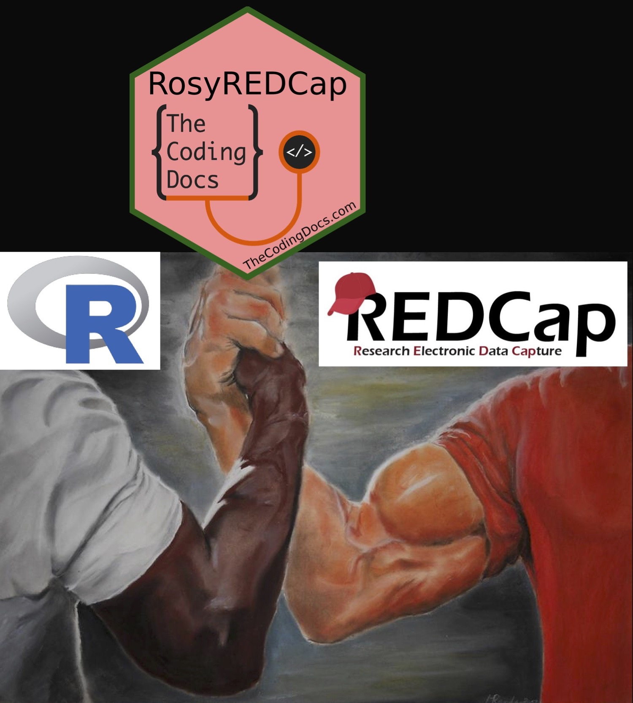

RosyREDCap Installation
Use your REDCap API token to create an updatable R list object (DB) to be used downstream for analysis, data exports, shiny apps, and even data imports! We are still in development. At this time this package is not suited for Multi-Arm projects or massive REDCap projects yet. If the functions are taking more than a minute or two you can use the internal functions of the package to build a subset. More to come in future versions!

What is {RosyREDCap}?
R and REDCap are both widely utilized in medicine, including basic science, clinical research, and clinal trials. Both have independent strengths, but together they can create powerful data pipelines. While several R packages exist for extracting data using the REDCap API, RosyREDCap stands out by offering comprehensive extraction of all metadata and data from any REDCap project into a standardized R list object, facilitating effortless downstream use in exports, imports, transformation, and applications. This is showcased in the exploratory data analysis shiny app included in the package. The three core aims of RosyREDCap are to…
- Maintain a local version of the database (DB) object by only calling recently updated records using the REDCap log.
- Allow imports of non-coded versions of the dataset using R or Excel/CSV.
- Launch a shiny app that allows you to explore all of your REDCap projects.
By leveraging the combined strengths of R and REDCap, users can maintain strong clinical data pipelines, collected and processed appropriately to improve research and patient care. RosyREDCap can be used as a base data object and data quality tool for most REDCap projects to aid in collection, monitoring, transformation, and analysis.
Installing RosyREDCap
Note: The current version of RosyREDCap used when writing this book is 1.0.0.9030, and some of the features presented in this book might not be available if you are using an older version, or be a little bit different if you have a newer version. Feel free to browse the package NEWS.
The stable release can be found on CRAN and installed with:
install.packages("RosyREDCap")You can install the development version of RosyREDCap from GitHub by using the remotes package. Be sure to install remotes if you don’t have it already.
remotes::install_github("brandonerose/RosyREDCap")Note that the version used at the time of writing this book is 1.0.0.9030. You can check what version you have installed with the following.
packageVersion("RosyREDCap")
#> [1] '1.0.0.9030'If you have any issues, try downloading the most recent version of R at RStudtio and update all packages in RStudio. See thecodingdocs.com/r/getting-started.
Future plans
- Future versions will document more advanced features that are already included!
- Documentation needs to be updated
- Need to add vignettes
- Need to clean up external vs internal namespace
- Plan to document how to use excel for bulk uncoded edits
- Plan to document how to use quality control functions
- Plan to document shiny app
- Plan to show R Markdown and automatic HTML, PDF reports
- Need to submit to CRAN
Links
- The RosyREDCap package is at github.com/brandonerose/RosyREDCap. See instructions above. Install remotes and install RosyREDCap
- Donate if I helped you out and want more development (anything helps)! account.venmo.com/u/brandonerose
- For more R coding visit thecodingdocs.com/
- For correspondence/feedback/issues, please email TheCodingDocs@gmail.com!
- Follow us on Twitter twitter.com/TheCodingDocs
- Follow me on Twitter twitter.com/BRoseMDMPH